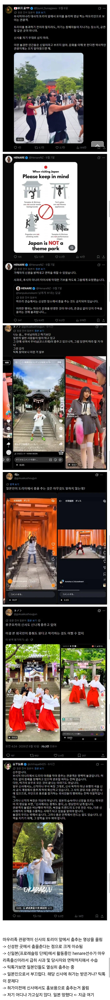

외국인 관광객한테 불경한 짓했다며 난리난 일본 근황
댓글
이제 이게 대 조선인 때문이다!! 로 대동단결 하나?
가오 잡겠다고 외국인 관광객을 내치는 관광지가 있다?
병신들 ㅋㅋㅋ
우리나라 경복궁에도 짱 새끼들이 지네 옷 입고 다니는거 뉴스에도 나온거니
기본은 지켜야지
그거랑은 좀 다른게
자국민들이 먼저 그 기본을 안지키고 있던게 틱톡 통해 흔하게 퍼져있던 상황이라
해도된다고 착각할 수 있으니까
외국인,내국인 관계없이 별 생각없이 관광하러 온 사람과 신심이 깊은사람의 차이 아니겠나
종교,역사 관련해선 예민하게 반응하는 사람이 나오는것도 어쩔수없다고 생각함
결국 중요한건 신주의 의지 아니겠음?
신주가 ㅇㅋ 허락합니다 하면 상관없는거고 ㄴㄴ 하지마셈 하면 안하면 되는거고
아~역대 총리의 99%가 조선인이 아니었다면 이런 일도 없었을 텐데 ㅠㅠ